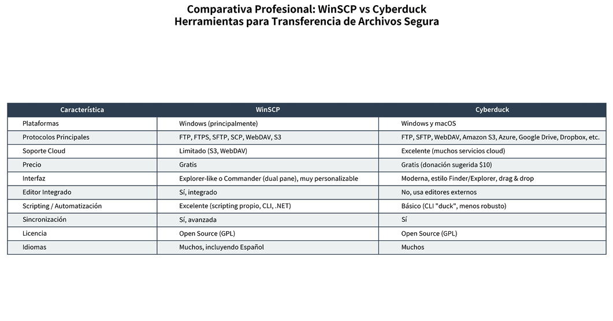
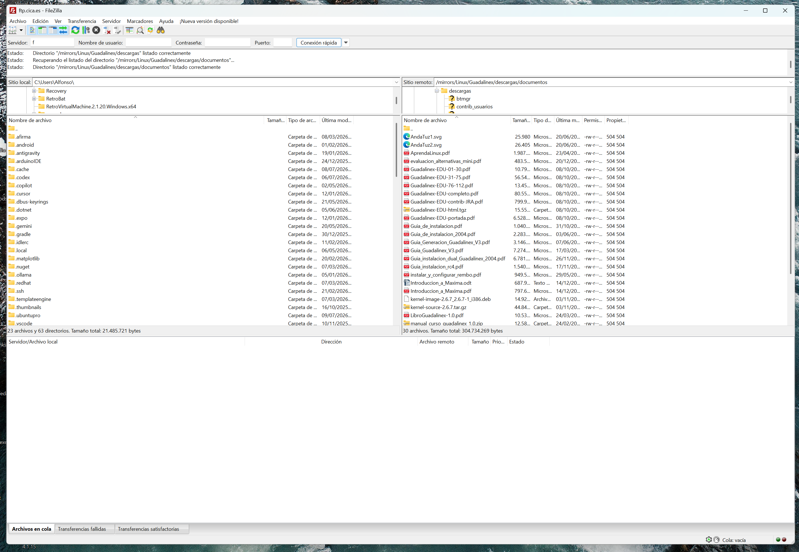

📁
Archivos y Recursos de la Actividad
Descarga los archivos originales asociados a esta actividad:
Módulo formativo: Publicación de páginas web (MF0952_2)
Actividad 1_Ejercicio teórico-práctico
Alfonso Rubio Rioseras
Julio 2026

Descarga los archivos originales asociados a esta actividad:
Cuando se desarrolla una página web se suele subir a un servidor conectado a internet. Para realizar esa transferencia de archivos y subir los datos a internet existen varias herramientas, aunque la más común y conocida es usar el protocolo FTP.
En el siguiente enlace se puede encontrar el programa FileZilla, que es de los más utilizados en la actualidad:
Para establecer una conexión con un servidor FTP (File Transfer Protocol) es necesario disponer de una serie de datos que permitan identificar tanto el servidor como al usuario autorizado. Los parámetros básicos son la dirección del servidor (nombre de dominio o dirección IP), el nombre de usuario, la contraseña y el puerto de comunicación. De forma predeterminada, el protocolo FTP utiliza el puerto 21, aunque algunos servidores pueden emplear otros puertos por motivos de seguridad o configuración.
Además de estos datos, es importante conocer el tipo de conexión que utiliza el servidor. Actualmente es recomendable emplear protocolos seguros como FTPS o SFTP, ya que cifran la información transmitida y protegen las credenciales de acceso frente a posibles interceptaciones. Asimismo, la mayoría de los clientes FTP utilizan el modo de conexión pasivo (PASV), que facilita la comunicación cuando el equipo cliente se encuentra detrás de un cortafuegos o un router.
Como ejemplo práctico, un administrador de un sitio web podría proporcionar los siguientes datos para acceder al servidor: servidor ftp.ejemplo.com, usuario webadmin, contraseña ************ y puerto 21. Introduciendo esta información en un cliente FTP, como FileZilla o WinSCP, el usuario podrá establecer la conexión y realizar operaciones de transferencia de archivos.
21)En conclusión, disponer de los parámetros de conexión adecuados constituye un requisito indispensable para acceder a un servidor FTP de forma correcta y segura. El conocimiento de estos datos, junto con el uso de protocolos de transferencia seguros, garantiza una administración eficiente y contribuye a proteger la información intercambiada entre el cliente y el servidor.
Además de FileZilla, existen numerosos clientes FTP que permiten gestionar la transferencia de archivos entre un equipo local y un servidor remoto. Dos de las alternativas más utilizadas son WinSCP y Cyberduck.
Cliente gratuito y de código abierto exclusivo para Windows. Destaca por:
Popular para Windows y macOS. Destaca por:
La siguiente tabla compara las principales características de ambos clientes respecto a FileZilla:

WinSCP constituye una excelente alternativa para usuarios de Windows que requieren funciones avanzadas de administración y automatización, mientras que Cyberduck destaca por su facilidad de uso y por su capacidad para gestionar tanto servidores FTP como servicios de almacenamiento en la nube. La elección entre uno u otro dependerá de las necesidades específicas del usuario y del entorno de trabajo.
Se conectará a un servidor de FTP utilizando un navegador web:
Guadalinex y después en las subcarpetas descargas y documentos.AprendaLinux.pdf.He utilizado el cliente FTP FileZilla versión 3.69.5 para descargar el archivo solicitado, que se entrega junto con el resto de la actividad. A continuación se muestra la captura del proceso de descarga:

ftp.cica.es/Guadalinex//descargas//documentos/AprendaLinux.pdf